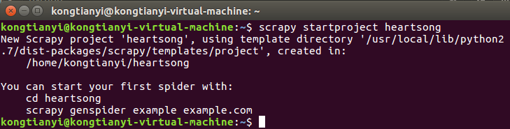
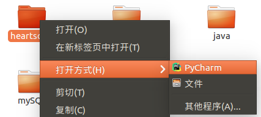
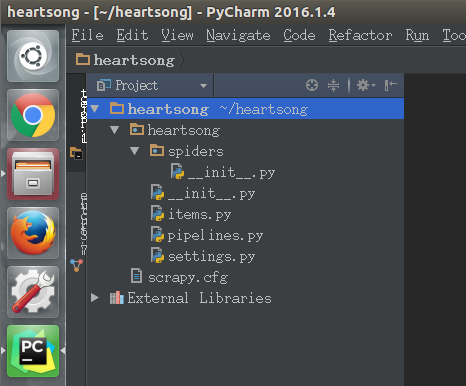
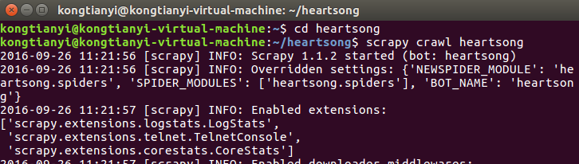
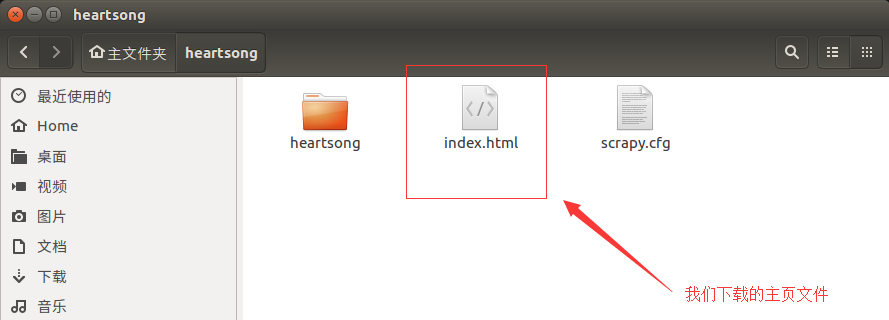
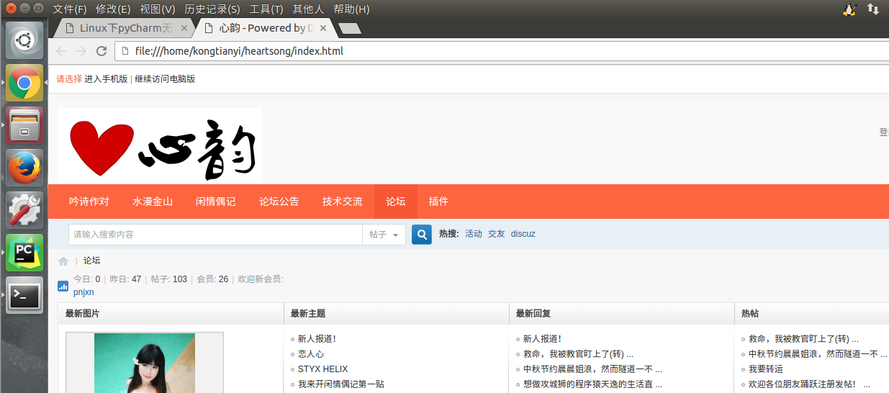

声明
本教程为原创教程，转载请注明出处http://kongtianyi.cn/2016/09/26/python/Scrapy-Lesson-1/
前言
目前网上的Scrapy中文教程比较少，而且大多教程使用的Scrapy版本较老，比如说这个Scrapy 0.25 文档，如其名，上古时期的翻译文档(后注：这个文档在不断更新，现在已更至1.0版本，喜欢阅读文档学习的朋友可以移步)；再比如极客学院的视频教程使用的是1.0.x版本，跟新版相比还是有出入(后注：当然喜欢视频的朋友可以移步)。这种情况使得新手入门Scrapy较为困难，而且各种掉坑。本人也是只刚入门的菜鸟，我希望能用菜鸟的语言给其他想要踏进Scrapy大门的小菜鸟指引一条道路。至少比我踩得坑少点吧^-^。
开发环境
- Ubuntu 16.04
- Python 2.7.12
- Scrapy 1.1.2(后注:因版本更新较快，我会把所知的新改动在教程中更新)
- PyCharm 2016.1.4
介绍
本教程将带领大家写一个爬取Discuz模板论坛网站的定向爬虫，网上的Discuz论坛数不胜数，当然我也不敢公开在这教唆大家去侵犯某一个，只好祭出自己搭的论坛来供大家练习——心韵论坛。当然，既然是Discuz模板，用哪个网站做教程都是大同小异的。有了思路后，其他网站也会触类旁通。本教程分为以下八个部分，将分为八篇博文向大家介绍：
- Scrapy安装与项目创建
- 通过Selector选择器解析页面获取内容
- 爬取多个页面
- 数据存入MongoDB
- 保持登陆状态
- 分析表单并回帖
- 使用UA/代理中间件(因课业繁忙，未更新，可催)
- 结束邮件通知(因课业繁忙，未更新，可催)
好，废话不多说，我们进入第一部分。
Scrapy安装
既然选择了Scrapy，那么使用Linux对你来说也是家常便饭了吧，安装教程请戳链接Ubuntu16.04安装Scrapy命令
新建项目
首先进入你想创建项目的目录，我为了方便，就直接在home目录下建项目了，因为我们要爬取的网站域名是heartsong.top，为了方便识别，我们把项目的名字起做heartsong，在命令行中输入以下命令：1
scrapy startproject heartsong
输出信息如图，表示项目创建成功

项目结构
我们通过PyCharm打开项目

发现默认生成的项目有如下结构

我们发现，默认生成的项目有下列几个文件
__init__.py× 2items.pypipelines.pysettings.pyscrapy.cfg
在这几个文件中，两个__init__.py和scrapy.cfg是用不到的，不多说。下面，我们来介绍一下我们在今后用的到的文件的基本用途
items.py
双击打开这个文件,看一下都初始化了什么东西1
2
3
4
5
6
7
8
9
10
11
12
13# -*- coding: urf-8 -*-
# Define here the models for your scrapyed items
#
# See documentation in
# http://doc.scrapy.org/en/latest/topics/items.html
import scrapy
class HeartsongItem(scrapy.Item):
# define the fields for your item here like:
#
# name = scrapy.Filed()
pass
通过里面的注释可见，这个文件的作用是定义我们要爬取信息的标准格式，打个比方说，如果我们要爬取一批人的个人信息，包括姓名，性别，生日，那么我们可以这样来书写这个文件1
2
3
4
5
6import scrapy
class HeartsongItem(scrapy.Item):
name = scrapy.Filed()
sex = scrapy.Filed()
birthday = scrapy.Filed()
易见本文件只是定义了一个类，至于什么时候实例化它，怎么保存它，请继续了解下面的内容。
settings.py
如其名，这是本项目的配置文件，里面注释着很多常用的配置项，我们通过在其他文件中引入本文件的方式来使用这些配置项。
当然，我们可以把这些注释都删掉，等需要开启哪个功能的时候再另行编辑。
我们此处先看看默认打开的配置项吧1
2
3
4
5BOT_NAME = 'heartsong'
SPIDER_MODULES = ['heartsong.spiders']
NEWSPIDER_MODULE = 'heartsong.spider'
# Obey robots.txt rules
ROBORSTXT_OBEY = True
因为我们写的是定向爬虫，前面三个按默认即可，我们不去管他。看第四项，注释里说这个配置项的意思是是否遵守robots.txt，那么robots.txt是个什么东西呢？
通俗来说，robots.txt是遵循Robot协议的一个文件，它保存在网站的服务器中，它的作用是，告诉搜索引擎爬虫，本网站哪些目录下的网页不希望你进行爬取收录。在Scrapy启动后，会在第一时间访问网站的robots.txt文件，然后决定该网站的爬取范围。
当然，我们并不是在做搜索引擎，而且在某些情况下我们想要获取的内容恰恰是被robots.txt所禁止访问的。所以，我们就将此配置项设置为False，拒绝遵守Robot协议！
pipelines.py
双击打开这个文件，看看都初始化了什么东西1
2
3
4
5
6
7
8
9
10# -*- coding: utf-8 -*-
# Define your item pipelines here
#
# Don't forget to add your pipeline to the ITEM_PIPELINES setting
# See: http://doc.scrapy.org/en/latest/topics/item-pipeline.html
class HeartsongPipeline(object):
def process_item(self, item, spider):
return item
从注释中所能得到的信息微乎其微，只告诉我们要启用此文件的话必须要在settings.py里配置一下ITEM_PIPELINES，好，那我们就老老实实的去settings.py里配置一下吧，不过注意，此处有坑，在1.0.x版本(极客学院教程中使用)，配置项用list格式来书写，而在最新的1.1.2版本中，需要用dict格式，否则会报错，无法爬取，配置好后，我们的setting.py如下：1
2
3
4
5
6
7
8
9
10
11# -*- coding: utf-8 -*-
BOT_NAME = 'heartsong'
SPIDER_MODULES = ['heartsong.spiders']
NEWSPIDER_MODULE = 'heartsong.spider'
ROBORSTXT_OBEY = True
ITEM_PIPELINES = {
'heartsong.pipelines.HeartsongPipeline': 300,
}
此处的300表示优先级，因为本项目只用到这一个pipeline，所以随意取0-1000中的一个数值即可。
好，镜头切回pipelines.py,这个文件到底有什么用呢？当然用处很多啦，本教程中介绍的作用只有两个：
- 对爬取到的数据(Item)进行处理，比如存入数据库
- 爬虫结束时产生事件，比如发送一封邮件
此处只是介绍一下，具体的操作要看后续教程。
爬虫呢？
默认生成的项目结构至此我们已经介绍完了，可是我们是来做爬虫的吧，爬虫呢？莫急莫急，互联网上的网站数不胜数，变化多端，我们的爬虫当然不可能一成不变，所以爬虫文件我们需要自己定义。
爬虫
在默认生成的spiders目录下新建heartsong_spider.py,我们的爬虫就写在这里面，因为是介绍，那么此处就写个简单的下载网站的主页，让大家能运行一下，感受一下scrapy。1
2
3
4
5
6
7
8
9
10
11
12
13
14
15
16import scrapy
class HeartsongSpider(scrapy.spiders.Spider):
name = "heartsong" # 爬虫的名字，执行时使用
allowed_domains = ["heartsong.top"] # 允许爬取的域名，非此域名的网页不会爬取
start_urls = [
"http://www.heartsong.top" # 起始url，此例只爬这一个页面
]
def parse(self, response): # 真正的爬虫方法
html = response.body # response是获取到的来自网站的返回
# 以下四行将html存入文件
filename = "index.html"
file = open(filename, "w")
file.write(html)
file.close()
要说明的是，这个类不是随心所欲来写的，name,allowed_domains,start_urls,都是类似于”重载”的值。也就是说，scrapy内部会检测这些变量的值，变量名不可以起成其它的名字，类似的变量之后还会有介绍。至于parse方法，就是重载的父类的方法，我们爬虫的主体一般就写在这里面。
好，现在让我们来运行它
在命令行中进入heartsong目录下，执行命令1
scrapy crawl heartsong
此处的名字heartsong是与爬虫类中的name保持一致。

输出的信息还是比较多的，我就不截完了。
来到heartsong目录下看看有没有下载成功

双击点开看看

发现很OK。
小结
本部分介绍了Scrapy的下载，创建项目，基本文件，运行程序这一部分入门知识，在下一个部分中，我们将学习如何使用Selector选择器在网页中提取我们想要的内容。